Chapter 16 Visualization
16.1 Prerequisites
Before starting to visualize networks, it is necessary to install the package for Social Network Analysis, called sna:
library(sna)16.2 Modifying the layout on KHF network
16.2.1 Random layout
Let’s plot the nodes randomly in the two-dimensional space, with the KHF dataset.
Notice that in order to build a network, we need an adjacency matrix, that’s why the csv is converted into a matrix structure. Then, in order to symmetrize it and make it undirected, it is multiplied for its transpose, to make a self-multiplication, in order to get an undirected network from a directed one (remember that if there’s a link going in both sides, we can insert an undirected link between these two vertices).
For instance, consider the following directed adjacency matrix:
\[ \left( \begin{array}{ccc} 0 & 1 & 1 \\ 1 & 0 & 0 \\ 0 & 0 & 1 \end{array} \right) \] By computing its transpose and perform the self multiplication we obtain the undirected network (symmetric and with links only whenever the link goes on both sides in the original directed network):
\[ \left( \begin{array}{ccc} 0 & 1 & 1 \\ 1 & 0 & 0 \\ 0 & 0 & 1 \end{array} \right) \times \left( \begin{array}{ccc} 0 & 1 & 0 \\ 1 & 0 & 0 \\ 1 & 0 & 1 \end{array} \right) = \left( \begin{array}{ccc} 0 & 1 & 0 \\ 1 & 0 & 0 \\ 0 & 0 & 1 \end{array} \right) \]
In the end it is turned into a network object.
# 1. Read in the friendship network for Krackhardt's high-tech managers:
KHF <- as.matrix(read.csv("datasets/Krackhardt_HighTech_Friendship.csv",
stringsAsFactors=FALSE, row.names=1))
# 2. Symmetrize the matrix using the minimum approach, so a friendship tie
# is only considered if both agree they are friends:
KHFS <- KHF*t(KHF)
# 3. Turn this into a "network" object:
KHFSn<-as.network(KHFS, directed=F)To save the plot as a tiff file (in the default folder) use the tiff() function, which opens an image file,
and finish with dev.off(), which closes the image file for changes.
# 4. Create and save visualization
# tiff(file="images/Fig_01_KHFS_Random.tiff",
# width=7, height=5,
# units="in", res=900)
par(mar=c(0,0,0,0)) # Margin deletion
gplot(KHFSn,
gmode="graph", # undirected network
mode="random", # random plotting of nodes
jitter=F, # do not allow nodes to be "jittered"
edge.col="grey70", # set color of ties
vertex.col="cornflowerblue", # set color of nodes
displaylabels=T, # indicate that labels should be included
label.pos=1, # indicate that labels should be given below points
label.cex=.7) # indicate the size of the labels (1 is default)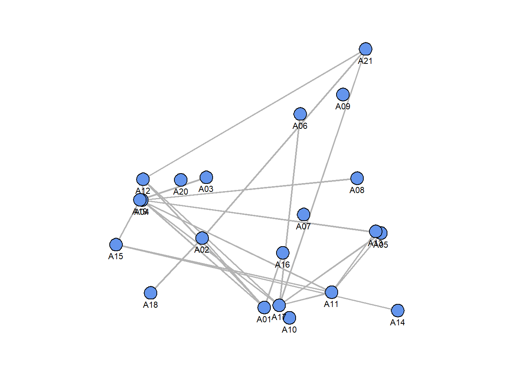
# dev.off()gmode="graph" is used for undirected networks, while gmode="digraph is used for directed networks. If the input graph is undirected but the selected gmode is for directed networks, then arrows on both sides will be visualized. Also, most of the times the margin deletion is not necessary.
The use of random position may be risky because of links overlapping and too close nodes.
16.2.2 Circle Layout
For a circle layout, it is necessary to change mode into "circle".
par(mar=c(0,0,0,0))
gplot(KHFSn,
gmode="digraph",
mode="circle",
jitter=F,
edge.col="grey70",
vertex.col="cornflowerblue",
displaylabels=T,
label.pos=1,
label.cex=.7,
arrowhead.cex = 0.5)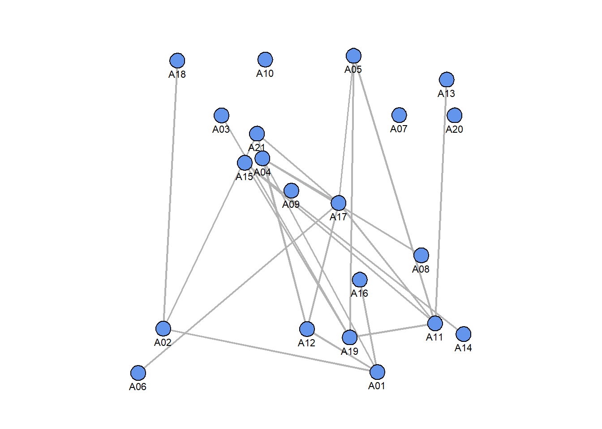
16.2.3 FR Layout
par(mar=c(0,0,0,0))
gplot(KHFSn,
gmode="graph",
#layout
mode="fruchtermanreingold",
jitter=FALSE,
#ties
edge.col="grey80",
#nodes
vertex.col="cornflowerblue",
vertex.cex = 1,
#labels
displaylabels=T,
label.pos=1,
label.cex=.7)16.2.4 KHA Network
The following network is denser than the previous, since we multiply the matrix for its transpose, indicating
# Read in the advice network for Krackhardt's high-tech managers:
KHA<-as.matrix(read.csv("datasets/Krackhardt_HighTech_Advice.csv",
stringsAsFactors=FALSE, row.names=1))
# Symmetrize the matrix using the minimum approach, so an advice tie
# is only considered if both ask each other for advice:
KHAS<-KHA*t(KHA)
# Turn this into a "network" object:
KHASn<-as.network(KHAS, directed=T)
par(mar=c(0,0,0,0))
gplot(KHASn,
gmode="graph",
#layout
mode="fruchtermanreingold",
jitter=F,
#ties
edge.col="grey70",
#nodes
vertex.col="cornflowerblue",
#labels
displaylabels=T,
label.pos=1,
label.cex=.7)We could also build a function to plot a network:
plot_network = function(network){
gplot(network,
gmode="graph",
#layout
mode="fruchtermanreingold",
jitter=F,
#ties
edge.col="grey70",
#nodes
vertex.col="cornflowerblue",
#labels
displaylabels=T,
label.pos=1,
label.cex=.7)
}
# Example of use
plot_network(KHASn)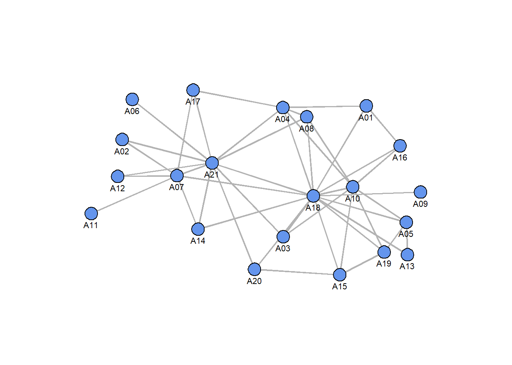
16.3 Layout based on 2 continuous attributes
# Read data and convert it into matrix
WPJ <- as.matrix(read.csv("datasets/Wolfe_Primates_JointPresence.csv",
stringsAsFactors=FALSE, row.names=1))
# Read attributes
WPAttr <- read.csv("datasets/Wolfe_Primates_Attributes.csv",
stringsAsFactors=FALSE, row.names=1)
# Rescale attributes so they range from 0 to 1
WP.AGE <- (WPAttr$AGE-min(WPAttr$AGE))/(max(WPAttr$AGE)-min(WPAttr$AGE))
WP.RANK <- (max(WPAttr$RANK)-WPAttr$RANK)/(max(WPAttr$RANK)-min(WPAttr$RANK))
# Turn the 2 continuous variables into coordinates
WPCOORD <- matrix(c(WP.AGE,WP.RANK),
dim(WPJ)[1],2)
# Consider drawing only "relatively strong" ties
WPJ6W <- (WPJ>5)*(WPJ-5)
# Only consider a tie in tie matrix, but only
# if major than 5 and then rescale it by removing 5In the next step, we’re going to make darker ties for those links where primates interacted more with each other (from grey40 to grey90).
# Create colors (greyscales) for ties
WPJ6W.Color<-WPJ6W
col.grey<-colorRampPalette(c("grey90", "grey40"))
col.greyN<-col.grey(max(WPJ6W)+1)
for (k in (1:max(WPJ6W)))
{
WPJ6W.Color[WPJ6W==k]<-col.greyN[k+1]
}Now let’s start drawing, remembering that:
- coordinates of nodes are given by their rank and their age (attributes):
coord=WPCOORD; - the edge color is given by the mapping color based on their number of links:
edge.col=WPJ6W.Color; - the color of the vertex indicates the gender of the primate (white for females, black for males):
vertex.col=(WPAttr$GENDER=="male")*9; - the added arrows allows us to visualize the cartesian plan.
par(mar=c(0,0,0,0))
gplot(WPJ6W*1.1,
gmode="digraph",
#layout
coord=WPCOORD, # using the coordinates to place primates
jitter=F,
#ties
edge.col=WPJ6W.Color,
edge.lwd=.3,
#nodes
vertex.col=(WPAttr$GENDER=="male")*9,
vertex.cex=0.5,
#labels
displaylabels=T,
label.pos=1,
label.cex=.7,
arrowhead.cex = 0.4)
# Add arrows
arrows(-.1, -.1, 1.1, -.1, length = 0.1)
arrows(-.1, -.1, -.1, 1.1, length = 0.1)
text(-.1, 1.1, labels="Rank",
cex=0.8, pos=4)
text(1.1,-.1, labels="Age",
cex=0.8, pos=3)
16.4 Layout where points are grouped based on nominal attribute
First of all, we’re going to import the datasets and convert them into networks as usual:
# 1. Convert datasets into networks
## Convert the KHA dataset into a network
KHA<-as.matrix(read.csv("datasets/Krackhardt_HighTech_Advice.csv",
stringsAsFactors=FALSE, row.names=1))
KHAS<-KHA*t(KHA)
KHASn<-as.network(KHAS, directed=F)
## Convert the KHF dataset into a network
KHF<-as.matrix(read.csv("datasets/Krackhardt_HighTech_Friendship.csv",
stringsAsFactors=FALSE, row.names=1))
KHFS<-KHF*t(KHF)
KHFSn<-as.network(KHFS, directed=F)Then, we can create a network with ties within departments to define positions. By importing the KHA dataset and maintaining its attribute, we will maintain the departments and convert them to matrix. In the end, we maintain only those links where two subjects belong to the same department (DEPS==t(DEPS)).
# 2. Create a network with ties within department to define positions
KHAttr<-read.csv("datasets/Krackhardt_HighTech_Attributes.csv",
stringsAsFactors=FALSE, row.names=1)
DEPS<-matrix(KHAttr$DEPT,nrow(KHA),nrow(KHA))
DEPSIM<-DEPS==t(DEPS)We can get nodes coordinates by plotting them based on their department similarity. Coords may change from an execution to another, but groupings will be the same. In this way, we will place similar nodes next to each other.
# 3. Get coordinates
par(mar = c(0,0,0,0))
DEP_COORD<-gplot(DEPSIM,
displaylabels=T)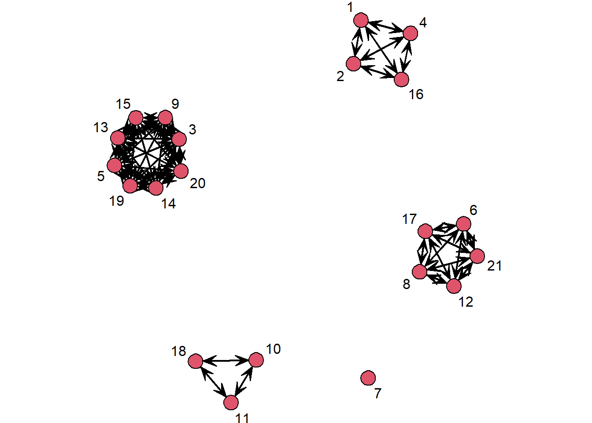
# 4. Draw the friendship network using
# the coordinates got from nominal friendship
par(mar=c(0,0,0,0))
gplot(KHFSn,
gmode="graph",
#layout
coord=DEP_COORD,
jitter=F,
#ties
edge.col="grey50",
edge.lwd=.7,
#nodes
vertex.col="cornflowerblue",
#labels
displaylabels=T,
label.pos=1,
label.cex=.7)par(mar=c(0,0,0,0))
gplot(KHASn,
gmode="graph",
#layout
coord=DEP_COORD,
jitter=F,
#ties
edge.col="grey50",
edge.lwd=.7,
#nodes
vertex.col="cornflowerblue",
#labels
displaylabels=T,
label.pos=1,
label.cex=.7)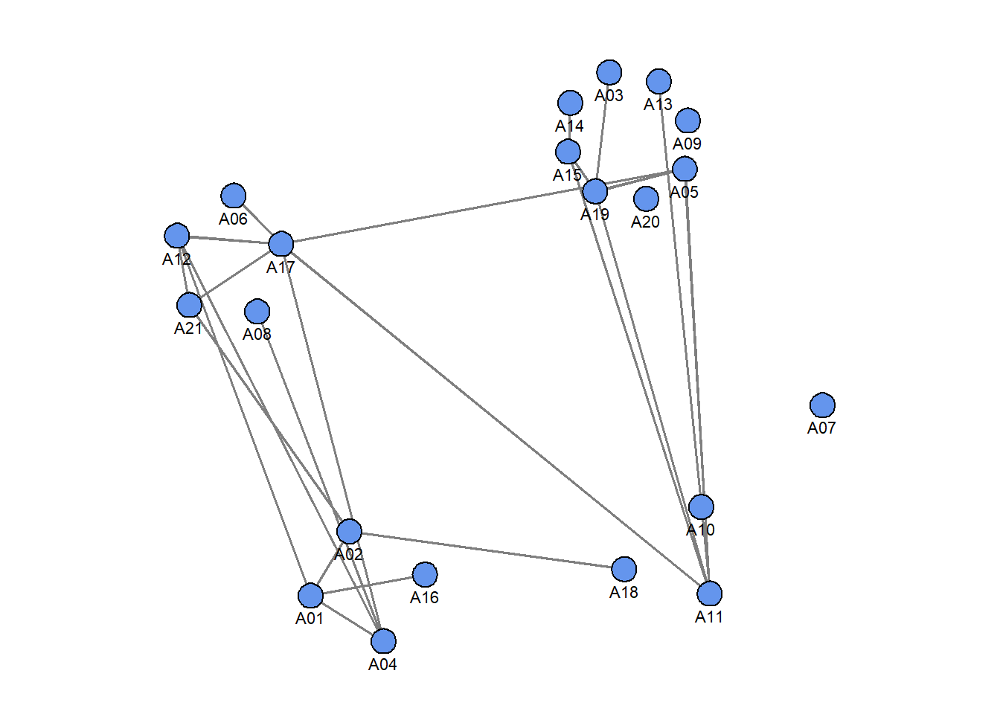 ## Geography - International trade among countries in 1928
In this case, nodes are positioned based on the geographic location of their capitals. Canada and the US have been slightly moved to the West to make the trade between European countries more visible.
# 1. Dataset conversion into network
STE<-as.matrix(read.csv("datasets/Savage_TransactionFlows_ExportsPerc.csv",
stringsAsFactors=FALSE, row.names=1))
STAttr<-read.csv("datasets/Savage_TransactionFlows_Attributes.csv",
stringsAsFactors=FALSE, row.names=1)
# 2. Consider Latitude and Longitude
LA<-STAttr$Latitude
LO<-STAttr$Longitude
# 3. Move Canada and US to the west
LO[2:3]<-LO[2:3]+40
# 4. Symmetrized using product
STES<-(STE*t(STE))
## To plot only stronger trades (more than 19 trades)
STESGT20<-round(((STES>19)*(STES-19))^.5)
# 5. Create colors (greyscale) for ties
STESGT20.Color<-STESGT20
col.grey<-colorRampPalette(c("grey80", "grey40"))
col.greyN<-col.grey(max(STESGT20)+1)
for (k in (1:max(STESGT20)))
{
STESGT20.Color[STESGT20==k]<-col.greyN[k+1]
}# 6. Visualizing the map
par(mar=c(0,0,0,0))
gplot(STESGT20,
gmode="graph",
coord=cbind(LO,LA), # Using geographical coordinates to map cities
jitter=F,
edge.col=STESGT20.Color,
edge.lwd=0.4,
vertex.col="grey90",
vertex.cex=0.3,
displaylabels=T,
label.cex=.5)
16.5 Multidimensional scaling
16.5.1 MDS on Primates
We can apply the MDS in order to better plot nodes inside the network, by using the default function in R cmdscale().
# 1. Rescale values using MDS
WPJS<-log(WPJ+1)
WPJ_CoordMDS<-cmdscale(max(WPJS)*1.001-WPJS, eig=TRUE, k = 2)
# 2. Consider drawing only "relatively strong" ties
WPJ6W<-(WPJ>5)*(WPJ-5)
# 3. Create color for ties
WPJ6W.Color<-WPJ6W
col.grey<-colorRampPalette(c("grey80", "grey30"))
col.greyN<-col.grey(max(WPJ6W)+1)
for (k in (1:max(WPJ6W)))
{
WPJ6W.Color[WPJ6W==k]<-col.greyN[k+1]
}
# 4. Draw
par(mar=c(0,0,0,0))
gplot(WPJ6W*1.1,
gmode="graph",
#layout
coord=WPJ_CoordMDS$points,
jitter=F,
edge.col=WPJ6W.Color,
edge.lwd=0.5,
#nodes
vertex.col=ifelse(WPAttr$GENDER=="male",4,2),
vertex.cex=0.8,
#labels
displaylabels=T,
label.pos=1,
label.cex=.7)16.5.2 MDS on valued trade
STE<-as.matrix(read.csv("datasets/Savage_TransactionFlows_ExportsPerc.csv",
stringsAsFactors=FALSE, row.names=1))
# Symmetrized using product
STES<-(STE*t(STE))
# To plot only stronger trade
STESGT20<-round(((STES>19)*(STES-19))^.5)
# Create colors (greyscale) for ties
STESGT20.Color<-STESGT20
col.grey<-colorRampPalette(c("grey80", "grey40"))
col.greyN<-col.grey(max(STESGT20)+1)
for (k in (1:max(STESGT20)))
{
STESGT20.Color[STESGT20==k]<-col.greyN[k+1]
}
STESGT20_Coord<-cmdscale((max(STE)*1.002-STE)^2, eig=TRUE, k = 2)
#STESGT20_Coord<-cmdscale(STE-STE, eig=TRUE, k = 2)
par(mar=c(1,1,1,1))
gplot(STESGT20,
gmode="graph",
#layout
coord=STESGT20_Coord$points,
jitter=F,
#ties
edge.col=STESGT20.Color,
edge.lwd=0.4,
#nodes
vertex.col="grey90",
vertex.cex=0.8,
#labels
displaylabels=T,
label.pos=1,
label.cex=.7)
16.5.3 MDS on geodesic distances
KHA<-as.matrix(read.csv("datasets/Krackhardt_HighTech_Advice.csv",
stringsAsFactors=FALSE, row.names=1))
KHAS<-KHA*t(KHA)
KHASn<-as.network(KHAS, directed=F)
GeoD<-geodist(KHASn)
max(GeoD$gdist)## [1] 3#GeoD$gdist[GeoD$counts==0]<--999
#GeoD$gdist[GeoD$gdist==-999]<-max(GeoD$gdist)
GeoD_Coord<-cmdscale(GeoD$gdist, eig=TRUE, k=2)
GeoD_Coord## $points
## [,1] [,2]
## [1,] 0.76162888 -0.15192804
## [2,] -1.51428017 0.01452473
## [3,] 0.06243284 -0.53328907
## [4,] 0.02556773 -0.89875609
## [5,] 1.13565391 0.34041487
## [6,] -1.25508843 -0.97588178
## [7,] -0.74784913 0.81617695
## [8,] 0.06471364 -0.77547617
## [9,] 0.85297735 0.24843971
## [10,] 1.07052904 -0.29602193
## [11,] -1.29460998 1.71553243
## [12,] -1.51428017 0.01452473
## [13,] 0.95428481 0.34017104
## [14,] -0.29225683 0.53688623
## [15,] 1.05597933 0.13644745
## [16,] 1.01641735 0.12773099
## [17,] -1.23959938 -0.42884357
## [18,] 0.37975961 0.20110852
## [19,] 1.14398272 0.29717063
## [20,] 0.06113491 -0.41675189
## [21,] -0.72709801 -0.31217975
##
## $eig
## [1] 1.881496e+01 7.566499e+00 5.471410e+00 3.744726e+00 3.436953e+00
## [6] 2.613479e+00 2.377477e+00 2.000000e+00 2.000000e+00 2.000000e+00
## [11] 1.109910e+00 7.348856e-01 5.306488e-01 1.185842e-01 2.664535e-15
## [16] -1.212696e-01 -2.706349e-01 -6.477894e-01 -1.307601e+00 -2.646835e+00
## [21] -3.715879e+00
##
## $x
## NULL
##
## $ac
## [1] 0
##
## $GOF
## [1] 0.4308616 0.5023171par(mar=c(1,1,1,1))
gplot(KHASn,
gmode="graph",
#layout
coord=GeoD_Coord$points,
jitter=T,
#ties
edge.col="grey50",
edge.lwd=.7,
#nodes
vertex.col="cornflowerblue",
#labels
displaylabels=T,
label.cex=.7)
16.6 KamadaKawai and FR layout KHFS
16.6.1 On Simulated data
mat8<-matrix(c(0),8,8)
mat8[1,2]<-1
mat8[2,3]<-1
mat8[3,4]<-1
mat8[3,5]<-1
mat8[3,6]<-1
mat8[4,5]<-1
mat8[4,6]<-1
mat8[5,6]<-1
mat8[6,7]<-1
mat8[7,8]<-1
mat8s<-(mat8+t(mat8))>0
gplot(mat8,
gmode="graph",
#layout
mode="fruchtermanreingold",
jitter=FALSE,
#ties
edge.col="grey70",
#nodes
vertex.col="cornflowerblue",
#labels
displaylabels=T,
label.pos=1,
label.cex=.7)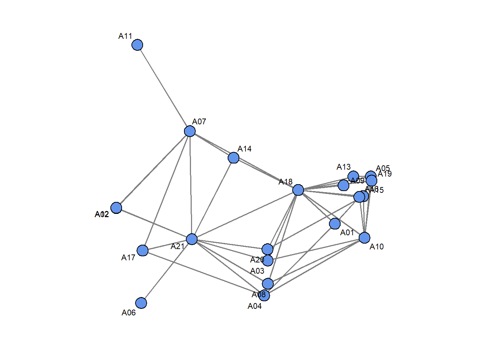
gplot(mat8,
gmode="graph",
#layout
mode="kamadakawai",
jitter=FALSE,
#ties
edge.col="grey70",
#nodes
vertex.col="cornflowerblue",
#labels
displaylabels=T,
label.pos=1,
label.cex=.7)16.6.2 Scientists collaborations
In the next chunk, the aim is to separated into two clusters those scientists that have more than 3 years of experience in their studies from those who do not. As can be seen from the plot, two groups are obtained: one with no edges and the other where every node is connected with the center.
BS504Cx<-as.matrix(read.csv("datasets/Borgatti_Scientists504_Attributes.csv",
stringsAsFactors=FALSE, row.names=1))
BS504C<-(BS504Cx>3)
par(mar=c(0,0,0,0))
gplot(BS504C,
gmode="graph",
#layout
mode="kamadakawai",
jitter=F,
#ties
edge.col="grey70",
edge.lwd=.1,
#nodes
vertex.col="cornflowerblue",
vertex.cex=.75)16.6.3 Nodal attributes on KHF
Let’s consider scientists’ tenure. If we aim to plot the variation in terms of tenure among scientists, size can be a choice:
KHF<-as.matrix(read.csv("datasets/Krackhardt_HighTech_Friendship.csv",
stringsAsFactors=FALSE, row.names=1))
KHFS<-KHF*t(KHF)
KHAttr<-read.csv("datasets/Krackhardt_HighTech_Attributes.csv",
stringsAsFactors=FALSE, row.names=1)
par(mar=c(1,1,1,1))
gplot(KHFS,
gmode="graph",
#layout
mode="fruchtermanreingold",
jitter=F,
#ties
edge.col="grey30",
edge.lwd=.4,
#nodes
vertex.col="cornflowerblue",
vertex.cex=KHAttr$TENURE/20+.8,
#labels
displaylabels=TRUE,
label.cex=.7)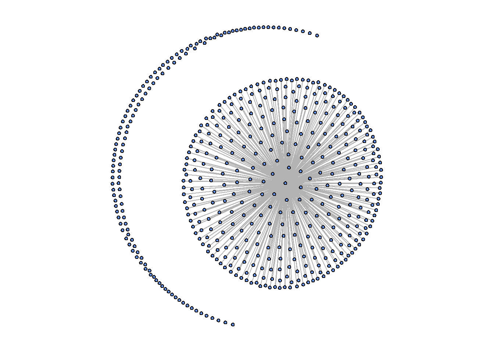
Now, the same plot is proposed again with:
- level as shape and colour;
- tenure as size.
# type sides of nodes
KHF<-as.matrix(read.csv("datasets/Krackhardt_HighTech_Friendship.csv",
stringsAsFactors=FALSE, row.names=1))
KHFS<-KHF*t(KHF)
KHAttr<-read.csv("datasets/Krackhardt_HighTech_Attributes.csv",
stringsAsFactors=FALSE, row.names=1)
par(mar=c(2,2,2,2))
gplot(KHFS,
gmode="graph",
#layout
mode="fruchtermanreingold",
jitter=F,
#ties
edge.col="grey30",
edge.lwd=.4,
#nodes
vertex.col=((KHAttr$LEVEL==1)*1+
(KHAttr$LEVEL==2)*7+
(KHAttr$LEVEL==3)*0),
# Define symbols
vertex.sides=((KHAttr$LEVEL==1)*3+
(KHAttr$LEVEL==2)*4+
(KHAttr$LEVEL==3)*20),
vertex.cex=.8+KHAttr$TENURE/25,
#labels
displaylabels=TRUE,
label.cex=.7)16.6.4 Scientists collaboration (more complex)
# Gender and tenure with legend
BS504Cx<-as.matrix(read.csv("datasets/Borgatti_Scientists504_Attributes.csv",
stringsAsFactors=FALSE, row.names=1))
BS504C<-(BS504Cx>3)
BS504Attr<-read.csv("datasets/Borgatti_Scientists504_Attributes.csv",
stringsAsFactors=FALSE, row.names=1)# Get the years
Tenure<-(BS504Attr$Years)
# Normalize the tenure by the maximum and consider the integer number of years
TenureA<-(round(10*(Tenure)/max((Tenure))))
# Create a color palette
colfunc <- colorRampPalette(c("lightpink", "cornflowerblue"))
COLWB<-colfunc(7)
# Assign colors to different tenures
TenureA2<-TenureA
TenureA2[TenureA==0]<-COLWB[1]
TenureA2[TenureA==1]<-COLWB[2]
TenureA2[TenureA==2]<-COLWB[3]
TenureA2[TenureA==3]<-COLWB[4]
TenureA2[TenureA==4]<-COLWB[5]
TenureA2[TenureA %in% c(5,6)]<-COLWB[6]
TenureA2[TenureA %in% c(7,8,9,10)]<-COLWB[7]
# Plot
par(mar=c(0,0,0,0))
gplot(BS504C,
gmode="graph",
#layout
#mode="kamadakawai",
jitter = F,
#ties
edge.col="grey80",
edge.lwd=.2,
#nodes
vertex.col=TenureA2,
vertex.cex=1+.7*(2-BS504Attr$Sex),
vertex.sides=(BS504Attr$Sex-1)*47+4)
legend("topright",
legend = c("Colors"," Senior", " Junior", " ","Shapes", " Male (2)", " Female (1)"),
col = c("white","lightpink","cornflowerblue","white","white","black","black"),
bty = "n", pch =c(19,19,19,19,19,19,18),
pt.cex = c(0,2.1,2.1,0,0,1.7,1.9),
cex = 1,
text.col = "grey10",
horiz = F ,
inset = c(0.01))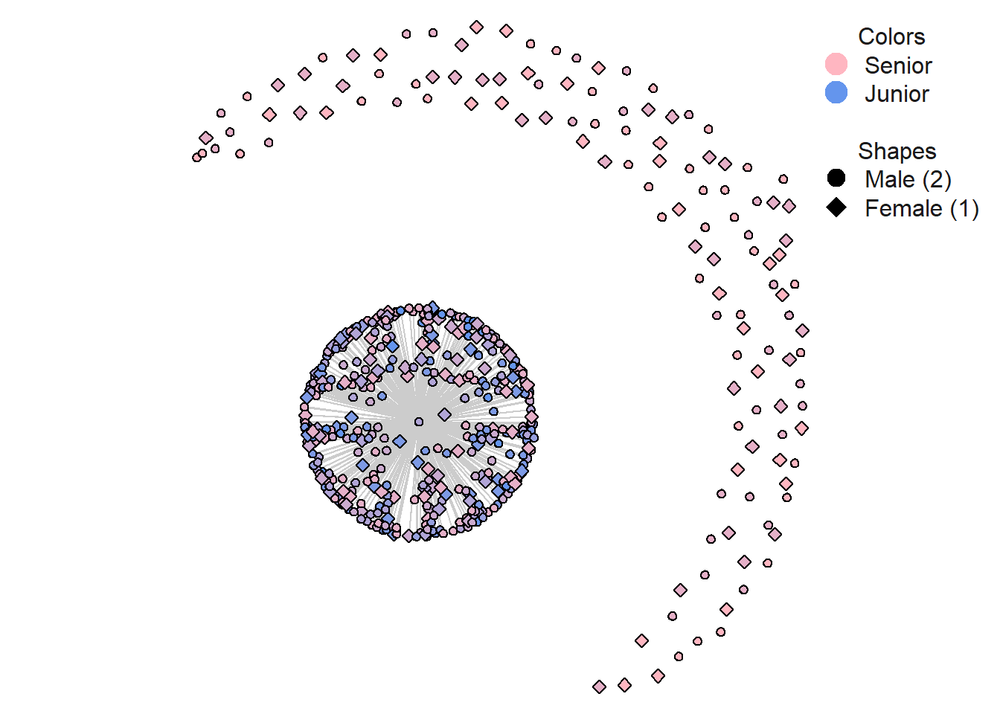
16.6.5 Nodal attributes on PFM
PFM<-as.matrix(read.csv("datasets/Padgett_FlorentineFamilies_Marriage.csv",
stringsAsFactors=FALSE, row.names=1))
PFMn<-as.network(PFM, directed=F)
# Compute the degree of the network
DPFM<-sna::degree(PFMn)
# Plot the network, where the size relies on the degree of every node
par(mar=c(0,0,0,0))
gplot(PFMn,
gmode="graph",
#layout
jitter=F,
#ties
edge.col="grey70",
edge.lwd=.1,
#nodes
vertex.col="cornflowerblue",
vertex.cex=DPFM/17+.5,
#labels
displaylabels=TRUE,
label.pos=3,
label.cex=DPFM/20+.3,
vertex.border="white")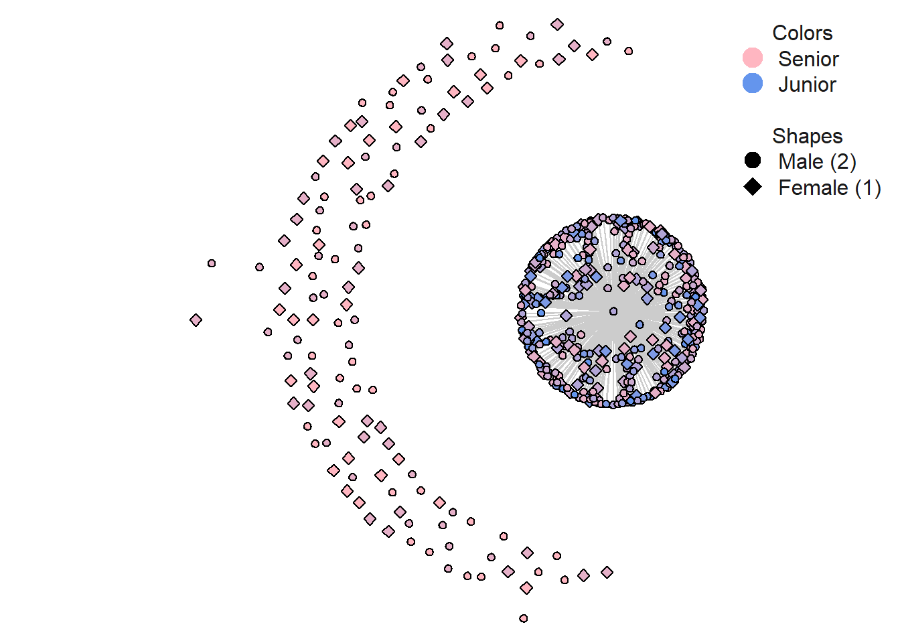
16.7 Tie strength on Scientists collaborations
BS504C<-as.matrix(read.csv("datasets/Borgatti_Scientists504_Attributes.csv",
stringsAsFactors=FALSE, row.names=1))
# Filtering different years of experience
BS504CGT3<-(BS504Cx>3)
BS504CGT5<-(BS504Cx>5)
BS504CGT7<-(BS504Cx>7)
BS504CGT9<-(BS504Cx>9)# 3 years of experience
par(mar=c(0,0,0,0))
gplot(BS504CGT3,
gmode="graph",
jitter=F,
#ties
edge.col="grey70",
edge.lwd=.1,
#nodes
vertex.col="cornflowerblue",
vertex.cex=.75)# 5 Years of experience
par(mar=c(0,0,0,0))
gplot(BS504CGT5,
gmode="graph",
#layout
jitter=F,
#ties
edge.col="grey60",
edge.lwd=.1,
#nodes
vertex.col="cornflowerblue",
vertex.cex=.75)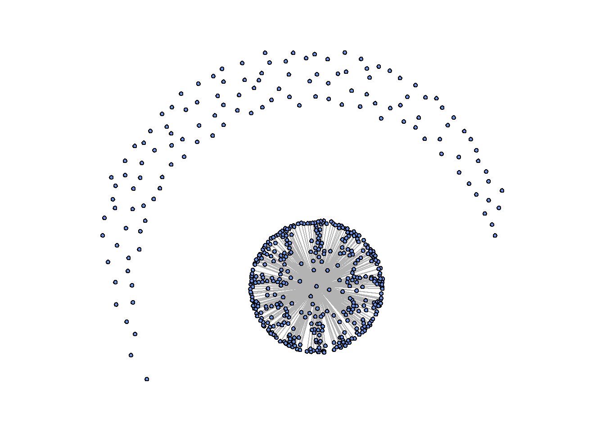
# 7 Years of experience
par(mar=c(0,0,0,0))
gplot(BS504CGT7,
gmode="graph",
jitter=F,
#ties
edge.col="grey60",
edge.lwd=.1,
#nodes
vertex.col="cornflowerblue",
vertex.cex=.75)# 9 years of experience
par(mar=c(0,0,0,0))
gplot(BS504CGT9,
gmode="graph",
jitter=F,
#ties
edge.col="grey60",
edge.lwd=.1,
#nodes
vertex.col="cornflowerblue",
vertex.cex=.75)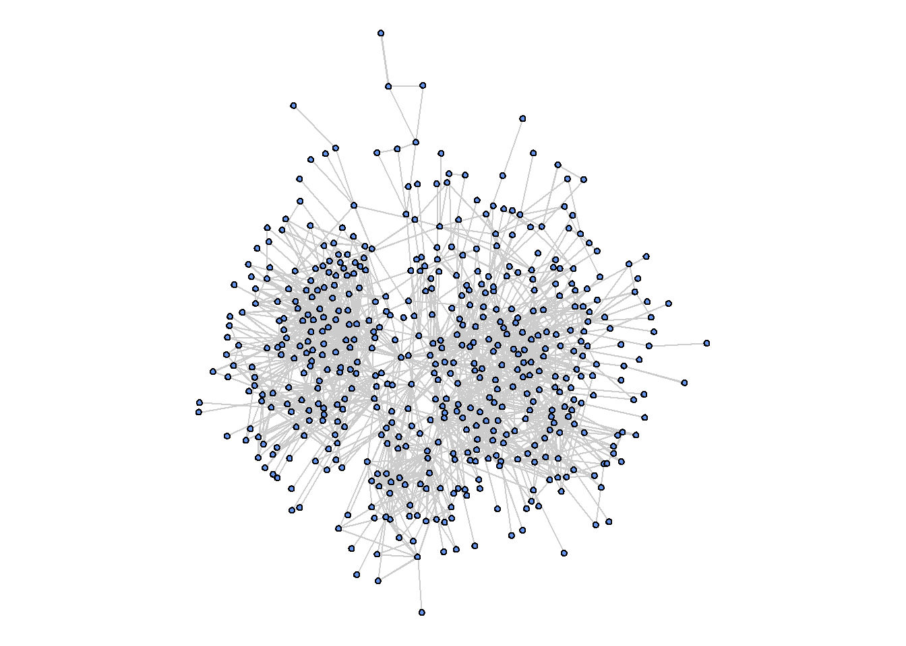
16.8 Directed networks
KHF<-as.matrix(read.csv("datasets/Krackhardt_HighTech_Friendship.csv",
stringsAsFactors=FALSE, row.names=1))
KHFn<-as.network(KHF, directed=T)# Plotting points based on their coordinates
par(mar=c(0,0,0,0))
gplot(KHFn,
gmode="digraph",
coord=COOKHF,
#layout
jitter=F, # do not allow nodes to be "jittered"
#ties
edge.col="grey30",
edge.lwd=0.2,
usecurve=T,
edge.curve=.04,
arrowhead.cex=.4,
#nodes
vertex.col="lightpink", # set color of nodes
vertex.cex=1.4,
#labels
displaylabels=T, # indicate that labels should be included
label.pos=5, # indicate that labels should be given below points
label.cex=.5) # indicate the size of the labels (1 is default)